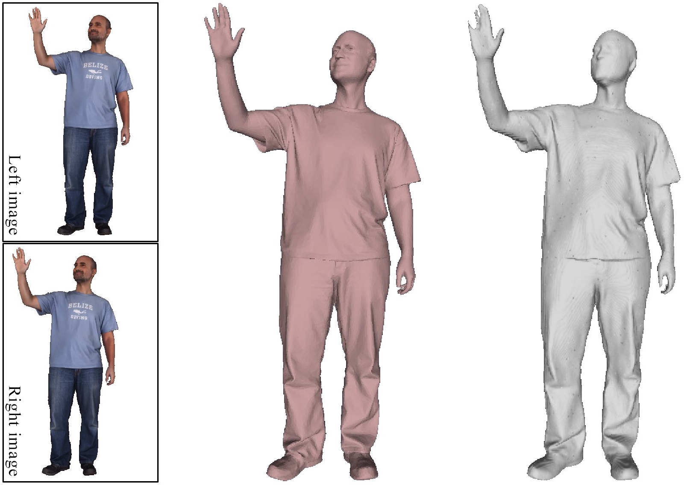
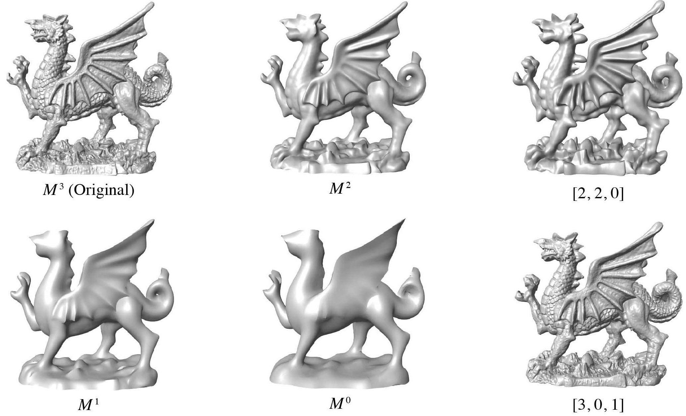

Yang Hong | 洪 阳Ph.D. Student
Graphics&Geometric Computing Laboratory (GCL) |
|
About Me
Yang Hong, supervised by Prof. Ligang Liu (刘利刚) and Prof. Juyong Zhang (张举勇), is currently working toward a doctor's degree in the School of Mathematical Sciences at University of Science and Technology of China. His research interests include geometric & image processing, 3D human modeling and neural rendering.
Research
|  |
StereoPIFu: Depth Aware Clothed Human Digitization via Stereo Vision Yang Hong, Juyong Zhang, Boyi Jiang, Yudong Guo, Ligang Liu and Hujun Bao. CVPR 2021. |

|
BCnet: Learning body and cloth shape from a single image. Boyi Jiang, Juyong Zhang, Yang Hong, Jinhao Luo, Ligang Liu and Hujun Bao. ECCV 2020. |
|
Fast Generation of Spatiotemporal-Consistent Dynamic Atlas. (时空一致的动态纹理地图快速生成) Yang Hong, Kang Wu, Wei Li, Wei Hu and Ligang Liu. Journal of Computer-Aided Design & Computer Graphics. 2020,32(05).
[Paper]
|
|
|  |
Static/Dynamic Filtering for Mesh Geometry. Juyong Zhang, Bailin Deng, Yang Hong, Yue Peng, Wenjie Qin and Ligang Liu. TVCG 2019. |